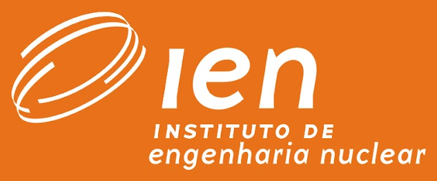

☰ Sumário ISO
📘 ABNT NBR ISO/IEC 17025:2017 & Treinamento Técnico
Desenvolvido por:
Carlos Eduardo Guerra de Mendonça
- Mat.: 217404
( ? )
📚 Glossário Metrológico
📄 Ver Norma com Destaques
📅 Modo Cronológico (Por Dia)
DIA 02/09
Dia 02/09/2026
(00:00:00)
Fonte:
Dia 02/09 (Manhã e Tarde)
Dia 03/09 (Dia Completo)
Dia 04/09 (Dia Completo)
Dia 10/09 - Manhã 1 (Cláusulas 4.1 e 4.2)
Dia 10/09 - Manhã 2 (Seções 5, 6.2 e 8.2-8.4)
Dia 10/09 - Tarde (Cláusulas 8.5, 8.8 e 8.9)
Velocidade:
0.75x
1.0x
1.25x
1.5x
2.0x
⏪ -10s
+10s ⏩
Seu navegador não suporta reprodução de áudio HTML5.
Todas as Cláusulas (266)
4. Requisitos Gerais (12)
5. Estrutura (6)
6. Recursos (70)
7. Processo (136)
8. Sistema de Gestão (42)
Filtrando por Cláusula: 6.4 Equipamentos
✕ Remover filtro
Todas as Classificações
Confirmado pela ISO / Princípio
Confirmado com Ressalva
Atenção / Ponto Crítico
Orientação Técnica / Boa Prática
Fonte Complementar
📖 ABNT NBR ISO/IEC 17025:2017
Pág. 1 / 22
◀
▶
↗ Nova Aba
✕
✕
🎓
Carlos Eduardo Guerra de Mendonça
Graduação em:
Química / Engenharia Química
Sistemas de Computação
Mestrado em:
Tecnologias Nucleares: Computação

✕
✕
📚 Glossário Metrológico & Siglas ISO/IEC 17025:2017
✕
46 termos